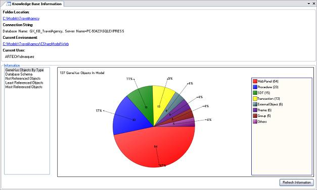

Sometimes we may want to have an idea of what kind of objects are in our Knowledge Bases and how they are proportionally used. In other words, we may want statistics. You can access this feature through the "View/Knowledge Base Information" command menu.  In the top section of the window you have the folder location, the connection string to the DBMS, the current environment folder, and the current user. The link under Folder Location, for example, allows you to explore the Knowledge Base directory. When this option is selected, a Windows Explorer window is opened in the directory corresponding to the model. The link under Current Environment has a similar use. In the box on the left, labeled "Information", you will find a list of object-related information. When you position yourself on each type of information on the list, the corresponding content will be shown in the area to the right.
Note: The Refresh Information button restarts the statistics feature. When you press it, the focus will return to the first information shown (GeneXus Objects By Type).
|